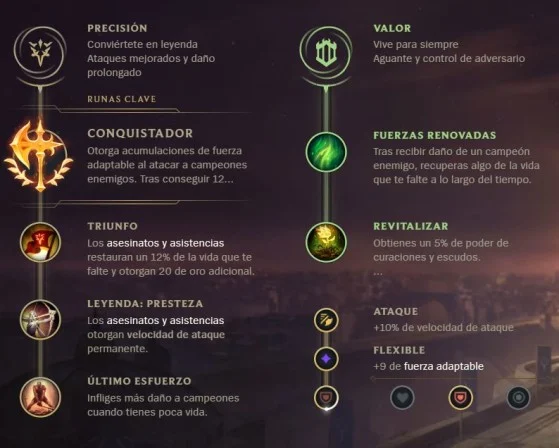
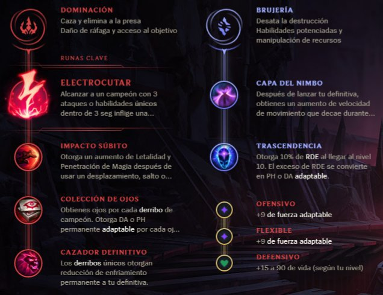

Aatrox
La espada Darkin

Aatrox y sus hermanos, que alguna vez fueron respetados defensores de Shurima contra el Vacío.
Habilidades
Pasiva: Heraldo de la destruccion
Cada cierto tiempo, el siguiente ataque básico de Aatrox inflige daño físico adicional
Q: La espada Darkin
Aatrox golpea el piso con su espada e inflige daño fisico
W: Cadenas infernales
Aatrox golpea el suelo e inflige daño al primer enemigo golpeado.
E: Impulso siniestro
Se desplaza en una dirección
R: Destructor de mundos
Aatrox despliega su forma demoniaca, aterroriza a los súbditos enemigos cercanos, y obtiene daño de ataque, curación aumentada y velocidad de movimiento
Build recomendada
Objetos escenciales

Escudo de doran

Espada de doran

Sortija de doran
Objetos Situacionales

Escudo de doran

Espada de doran

Sortija de doran
Botas

Botas jonias de lucidez

Botas mercuriales

Tabis de ninja
Orden de compra
Espada doran
Bebedor de sangre
Tabis de ninja
Eclipse
drakthaar
Guanelete de sterak
Runas
 Skins
Aatrox justiciero

Aatrox mecha